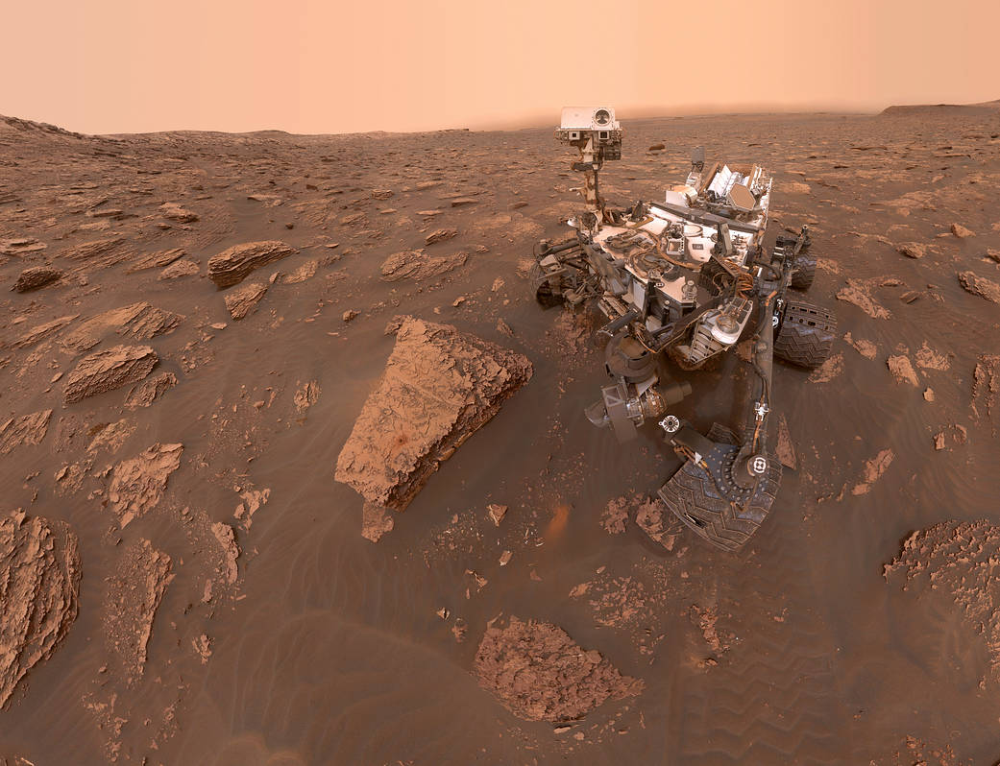

Verkenning

De eerste succesvolle missie naar Mars werd ondernomen door de Sovjet-Unie in 1962 door middel van een ruimtesonde na verschillende gefaalde missies. Hierna werden er in de jaren zestig en begin jaren zeventig door de Sovjet-Unie nog verschillende andere ruimtesondes gestuurd, maar slechts twee daarvan bereikten Mars in 1971. Een daarvan crashte op het oppervlak van de planeet, en de ander maakte een succesvolle landing, maar kort hierna begaf de communicatie van de sonde het. Hierna volgden nog enkele andere ruimtesondes, waarvan er verschillenden data en foto's terugstuurden.
De Amerikaanse ruimtevaart organisatie NASA lukte het in 1969, na enkele gefaalde missies, om de eerste foto's van de oppervlakte van Mars te maken met ruimtesonde Mariner4. Hierna volgden nog verschillende andere missies, die de eerste aanwijzingen gaven dat er ooit misschien water op Mars aanwezig was geweest. In de jaren hierna waren er nog verschillende ruimteprogramma's die meer licht op de planeet wierpen:
- Viking programma (1975-1979)
- Mars Pathfinder (1995-1997)
- Mars Global Surveyor (1992-1997)
- Mars Odyssey & Mars Express (2001)
De meest intensieve verkenningen van Mars zijn echter gedaan door de bekende Mars rovers:
- Spirit & Opportunity (2003)
- Phoenix lander (2008)
- Curiosity (2011-2012)
- Perseverance (2020)
Andere recente missies naar Mars waren de Mars Reconnaissance Orbiter (2005-2006), MAVEN (2013-2014), Mars Orbiter Mission (2013-2014, India), Trace Gas Orbiter & EDM (2016, ESA & Roscosmos), Hope Mars Mission (2020, Verenigde Arabische Emiraten), Tianwen-1 (2020, China).